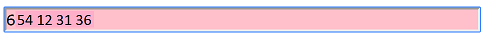

Dins la caixa de text es poden indicar dades alfanumèriques.
La caixa de text ha de tenir un valor per defecte. El que tu vulguis
Al prémer el botó amb id 'b2', comptar la quantitat de vegades que apareix el patró "NV"
Si no apareix cap vegada, mostrar un missatge en l'etiqueta span amb id 'aa'.
Si apareix més de tres vegades, mostrar en l'etiqueta span amb id aa la quantitat de vegades que apareix i restaurarà la caixa de text amb el seu valor per defecte inicial.
Es vol que la caixa de text d'aquí sota, amb id 'tel', permeti indicar 9 números en grups de 3, separats per un espai en blanc cada grup.
L'estil de la caixa ha de canviar en el moment que l'usuari comenci a escriure en la caixa de text (esdeveniment 'onInput')

I l'estil de la caixa ha de canviar de nou, en el moment que el valor compleixi els requisits.